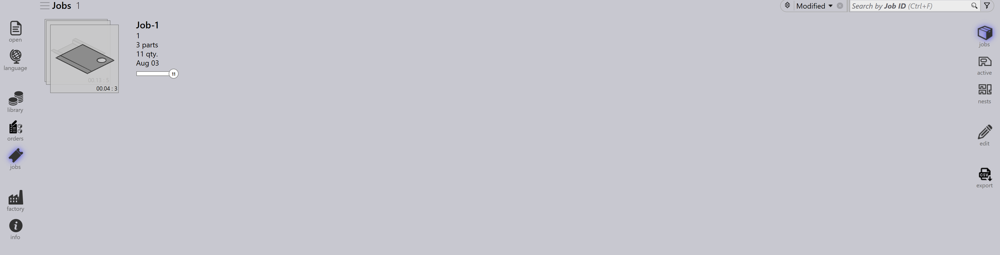

Jobansicht
Dieser Abschnitt erläutert die verschiedenen Ansichten, die in der Jobansicht verfügbar sind, einschließlich Jobs, Parts, Nests, Edit, Simulate und Export.
Jobs
Die Auswahl der Option jobs zeigt eine Liste aller derzeit in der Software eingerichteten Jobs an. Sie können auf einen Job doppelklicken, um seine Details anzuzeigen, oder mit der rechten Maustaste klicken, um auf zusätzliche Optionen zuzugreifen.
-
Jobs werden in der Kachelansicht angezeigt, wobei jeder Job mit grundlegenden Eigenschaften wie Job-ID, Job-Ref, Kundenname, Gesamtteile, Fälligkeitsdatum, Jobstatusleiste usw. angezeigt wird.
-
Jede Jobkachel zeigt außerdem Teilebilder in einem gestapelten Kartenformat an. Sie können mit dem Mausrad durch alle Teile eines Jobs blättern.

Jobdetails
-
Durch Doppelklicken auf eine Kachel oder Drücken der Enter-Taste nach Auswahl einer Kachel wechselt die Ansicht in den Detailmodus.
-
Die Detailseite zeigt die Teileliste zusammen mit den geschachtelten Tafeln (Layouts) an, falls vorhanden.
-
Verwenden Sie die Pfeiltasten Auf/Ab, um auf der Detailseite zwischen Jobs zu wechseln.
-
Das Scrollen mit dem Mausrad über den Teilestapel hebt das Teil sowohl in der Teileliste als auch in den Layouts hervor.
-
Die Auswahl eines Layouts hebt das Layout und alle darauf geschachtelten Teile in der Teileliste hervor. Die Hervorhebungen werden nach einer Minute automatisch deaktiviert.

-
Nest summary:
-
Parts: Zeigt die Gesamtzahl der Auftragspositionen und die Gesamtmenge im Job an.
-
Sheets: Zeigt die Gesamtzahl der geschachtelten Tafeln zusammen mit der Gesamttafelmenge an.
-
-
Work Steps:
-
Bending: Zeigt die zugewiesene Maschine und ihre zu verarbeitende Auftragsmenge an.
-
Cutting: Zeigt die zugewiesene Maschine und ihre zu verarbeitende Auftragsmenge an.
-
Priorität
-
Klicken Sie zuerst auf das Symbol Jobs auf der linken Seite des Bildschirms, wählen Sie den Job aus, den Sie bearbeiten möchten, und klicken Sie dann auf edit auf der rechten Seite des Bildschirms (stellen Sie sicher, dass die Option Jobs ausgewählt ist).
-
Alternativ klicken Sie mit der rechten Maustaste auf den ausgewählten Job und klicken Sie auf das Symbol Check-out the document for editing.
-
Wenn Sie auf edit klicken, erscheint das Fenster zum Bearbeiten des Jobs. In diesem Fenster können Sie die Priorität für den Job festlegen oder ändern.

-
Basierend auf der Teilepriorität des Jobs wird die Job-Referenz in der Jobkachel entsprechend farblich hinterlegt.
-
Jobteile werden zuerst nach Priorität und dann nach Fälligkeitsdatum sortiert. Sie werden außerdem entsprechend ihrer Priorität farblich hinterlegt.
-
Beim Schachteln werden Urgent-Teile zuerst berücksichtigt, gefolgt von High, dann Normal und schließlich werden Low-Prioritätsteile im verbleibenden Platz auf den Schachteltafeln platziert.
-
Schachteltafeln werden ebenfalls nach Priorität sortiert und farblich hinterlegt.
| Jobpriorität | Farbbeschreibung |
|---|---|
|
Urgent |
|
Normal |
|
High |
|
Low |


Status
-
Die Jobstatusleiste verwendet Farbcodes, um den Fortschritt oder Zustand des Jobs basierend auf der verarbeiteten oder verbleibenden Menge anzuzeigen.
-
Die Teile innerhalb des Jobs und die Schachteltafeln werden ebenfalls mit passenden Farben hervorgehoben, um ihren individuellen Status innerhalb des gesamten JOBs widerzuspiegeln.
-
Die Farbcodierung verbessert die Nachverfolgung und stellt sicher, dass Bediener den Produktionsstatus auf einen Blick leicht erkennen können.
| Jobstatus | Beschreibung |
|---|---|
|
Not ready |
|
Nesting |
|
Ready |
|
Bend Planned |
|
Sheet missing |
|
Bending queue |
|
Cutting Queue |
|
Done(Completed) |


Teile
Die Ansicht Active Parts zeigt alle Teile an, die sich derzeit innerhalb aktiver Jobs in Bearbeitung befinden.
Jedes Teil wird als Kachel dargestellt, die wichtige Details wie Teilename, Abmessungen, Material, Dicke, Menge und Fälligkeitsdatum anzeigt. Eine visuelle Vorschau des Teils wird ebenfalls angezeigt.
Diese Ansicht hilft Benutzern, den Verarbeitungsstatus einzelner Teile zu überwachen und ihren Fortschritt über laufende Jobs hinweg zu verfolgen.
Schachtelungen
Die Ansicht Active Nests zeigt alle Schachtelungen an, die sich derzeit innerhalb aktiver Jobs in Bearbeitung befinden.
Jede Schachtelung wird mit relevanten Details wie Anzahl der Teile und Verarbeitungsstatus dargestellt. Ein visuelles Layout der geschachtelten Teile wird ebenfalls angezeigt.
Diese Ansicht hilft Benutzern, den Schachtelfortschritt zu überwachen und zu verfolgen, wie Teile auf Tafeln angeordnet und verarbeitet werden.
Bearbeiten
Mit der Option Edit können Sie das ausgewählte Element ändern.
Basierend auf der aktuellen Ansicht wird die ausgewählte Instanz zur Bearbeitung geöffnet:
-
In der Jobs-Ansicht wird der ausgewählte Job zur Bearbeitung geöffnet.
-
In der Ansicht Active Parts wird das ausgewählte Teil zur Bearbeitung geöffnet.
-
In der Ansicht Active Nests wird die ausgewählte Schachtelung zur Bearbeitung geöffnet.
CSV exportieren
Mit der Option Export können Sie Jobinformationen auswählen und in eine CSV-Datei exportieren.
-
Klicken Sie auf das Symbol jobs.
-
Klicken Sie auf die Option export auf der rechten Seite des Bildschirms.
-
Ein Dialogfeld erscheint, das die verfügbaren Felder anzeigt:
-
Aktivieren Sie die Kontrollkästchen für die Felder, die Sie exportieren möchten.
-
Verwenden Sie die Option Group By, wenn Sie die Daten nach einem ausgewählten Feld gruppieren möchten.
-
Klicken Sie auf Export, um die CSV-Datei zu generieren.
Zusätzliche Informationen
Es gibt außerdem drei zusätzliche Symbole auf der rechten Seite des Bildschirms: Simulate, Goto und Back.
-
Simulate öffnet das ausgewählte Element für eine detailliertere Ansicht.
-
Goto verschiebt den Fokus und die Anzeige auf das ausgewählte Teil oder die ausgewählte Schachtelung.
-
Back geht von Ihrer aktuellen Position eine Ebene zurück; wenn Sie beispielsweise während der Simulation auf Back klicken, gelangen Sie zurück zum Haupt-Job, und von einem Job gelangen Sie zurück zur Haupt-Jobanzeige.